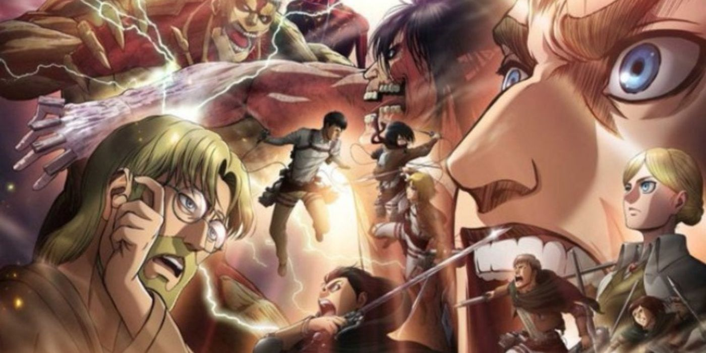

The only thing we're allowed to believe is that we won't regret the choice we made.”. “The world is merciless, and it's also very beautiful.”. “You can't change anything unless you can discard part of yourself too.
Several hundred years ago, humans were nearly exterminated by giants. Giants are typically several stories tall, seem to have no intelligence, devour human beings and, worst of all, seem to do it for the pleasure rather than as a food source. A small percentage of humanity survived by walling themselves in a city protected by extremely high walls, even taller than the biggest of giants.Flash forward to the present and the city has not seen a giant in over 100 years. Teenage boy Elen and his foster sister Mikasa witness something horrific as the city walls are destroyed by a super giant that appears out of thin air. As the smaller giants flood the city, the two kids watch in horror as their mother is eaten alive. Elen vows that he will murder every single giant and take revenge for all of mankind
The beginning of Attack on Titan focused on how Eren and his comrades became soldiers, with them graduating from the 104th Cadet Corps in the fourth episode. Afterwards, they went to Trost, where Eren thought about how far he had come and all the things he wanted to do.